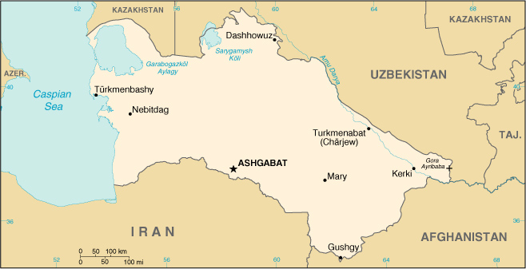

|
Turkmenistan | |
| Introduction Geography People Government Economy Communications Transportation Military Transnational Issues | ||
|  | ||
| Turkmenistan | Introduction | Top of Page |
| Background: | Annexed by Russia between 1865 and 1885, Turkmenistan became a Soviet republic in 1925. It achieved its independence upon the dissolution of the USSR in 1991. President NIYAZOV retains absolute control over the country and opposition is not tolerated. Extensive hydrocarbon/natural gas reserves could prove a boon to this underdeveloped country if extraction and delivery projects can be worked out. |
| Turkmenistan | Geography | Top of Page |
| Location: | Central Asia, bordering the Caspian Sea, between Iran and Kazakhstan |
| Geographic coordinates: | 40 00 N, 60 00 E |
| Map references: | Commonwealth of Independent States |
| Area: |
total:
488,100 sq km
land: 488,100 sq km water: 0 sq km |
| Area - comparative: | slightly larger than California |
| Land boundaries: |
total:
3,736 km
border countries: Afghanistan 744 km, Iran 992 km, Kazakhstan 379 km, Uzbekistan 1,621 km |
| Coastline: | 0 km; note - Turkmenistan borders the Caspian Sea (1,768 km) |
| Maritime claims: | none (landlocked) |
| Climate: | subtropical desert |
| Terrain: | flat-to-rolling sandy desert with dunes rising to mountains in the south; low mountains along border with Iran; borders Caspian Sea in west |
| Elevation extremes: |
lowest point:
Vpadina Akchanaya -81.00 m; note - Sarygamysh Koli is a lake in northern Turkmenistan with a water level that fluctuates above and below the elevation of Vpadina Akchanaya (the lake has dropped as low as -110 m)
highest point: Gora Ayribaba 3,139 m |
| Natural resources: | petroleum, natural gas, coal, sulfur, salt |
| Land use: |
arable land:
3%
permanent crops: 0% permanent pastures: 63% forests and woodland: 8% other: 26% (1993 est.) |
| Irrigated land: | 13,000 sq km (1993 est.) |
| Natural hazards: | NA |
| Environment - current issues: | contamination of soil and groundwater with agricultural chemicals, pesticides; salination, water-logging of soil due to poor irrigation methods; Caspian Sea pollution; diversion of a large share of the flow of the Amu Darya into irrigation contributes to that river's inability to replenish the Aral Sea; desertification |
| Environment - international agreements: |
party to:
Biodiversity, Climate Change, Climate Change-Kyoto Protocol, Desertification, Hazardous Wastes, Ozone Layer Protection
signed, but not ratified: none of the selected agreements |
| Geography - note: | landlocked |
| Turkmenistan | People | Top of Page |
| Population: | 4,603,244 (July 2001 est.) |
| Age structure: |
0-14 years:
37.88% (male 891,758; female 852,104)
15-64 years: 58.09% (male 1,313,303; female 1,360,690) 65 years and over: 4.03% (male 70,800; female 114,589) (2001 est.) |
| Population growth rate: | 1.85% (2001 est.) |
| Birth rate: | 28.55 births/1,000 population (2001 est.) |
| Death rate: | 8.98 deaths/1,000 population (2001 est.) |
| Net migration rate: | -1.04 migrant(s)/1,000 population (2001 est.) |
| Sex ratio: |
at birth:
1.05 male(s)/female
under 15 years: 1.05 male(s)/female 15-64 years: 0.97 male(s)/female 65 years and over: 0.62 male(s)/female total population: 0.98 male(s)/female (2001 est.) |
| Infant mortality rate: | 73.25 deaths/1,000 live births (2001 est.) |
| Life expectancy at birth: |
total population:
61 years
male: 57.43 years female: 64.76 years (2001 est.) |
| Total fertility rate: | 3.58 children born/woman (2001 est.) |
| HIV/AIDS - adult prevalence rate: | 0.01% (1999 est.) |
| HIV/AIDS - people living with HIV/AIDS: | less than 100 (1999 est.) |
| HIV/AIDS - deaths: | less than 100 (1999 est.) |
| Nationality: |
noun:
Turkmen(s)
adjective: Turkmen |
| Ethnic groups: | Turkmen 77%, Uzbek 9.2%, Russian 6.7%, Kazakh 2%, other 5.1% (1995) |
| Religions: | Muslim 89%, Eastern Orthodox 9%, unknown 2% |
| Languages: | Turkmen 72%, Russian 12%, Uzbek 9%, other 7% |
| Literacy: |
definition:
age 15 and over can read and write
total population: 98% male: 99% female: 97% (1989 est.) |
| Turkmenistan | Government | Top of Page |
| Country name: |
conventional long form:
none
conventional short form: Turkmenistan local long form: none local short form: Turkmenistan former: Turkmen Soviet Socialist Republic |
| Government type: | republic |
| Capital: | Ashgabat |
| Administrative divisions: |
5 welayatlar (singular - welayat): Ahal Welayaty (Ashgabat), Balkan Welayaty (Nebitdag), Dashhowuz Welayaty (formerly Tashauz), Lebap Welayaty (Charjew), Mary Welayaty
note: administrative divisions have the same names as their administrative centers (exceptions have the administrative center name following in parentheses) |
| Independence: | 27 October 1991 (from the Soviet Union) |
| National holiday: | Independence Day, 27 October (1991) |
| Constitution: | adopted 18 May 1992 |
| Legal system: | based on civil law system |
| Suffrage: | 18 years of age; universal |
| Executive branch: |
chief of state:
President and Chairman of the Cabinet of Ministers Saparmurat NIYAZOV (since 27 October 1990, when the first direct presidential election occurred); note - the president is both the chief of state and head of government
head of government: President and Chairman of the Cabinet of Ministers Saparmurat NIYAZOV (since 27 October 1990, when the first direct presidential election occurred); note - the president is both the chief of state and head of government cabinet: Council of Ministers appointed by the president note: NIYAZOV's term in office was extended indefinitely on 28 December 1999 by the Assembly (Majlis) during a session of the People's Council (Halk Maslahaty) elections: president elected by popular vote for a five-year term; election last held 21 June 1992 (next scheduled to be held NA); note - President NIYAZOV was unanimously approved as president for life by the Assembly on 28 December 1999); deputy chairmen of the cabinet of ministers are appointed by the president election results: Saparmurat NIYAZOV elected president without opposition; percent of vote - Saparmurat NIYAZOV 99.5% |
| Legislative branch: |
under the 1992 constitution, there are two parliamentary bodies, a unicameral People's Council or Halk Maslahaty (more than 100 seats, some of which are elected by popular vote and some of which are appointed; meets infrequently) and a unicameral Assembly or Majlis (50 seats; members are elected by popular vote to serve five-year terms)
elections: People's Council - NA; Assembly - last held 12 December 1999 (next to be held NA 2004) election results: Assembly - percent of vote by party - NA%; seats by party - NA; note - all 50 elected officials preapproved by President NIYAZOV; most are from the DPT |
| Judicial branch: | Supreme Court (judges are appointed by the president) |
| Political parties and leaders: |
Democratic Party of Turkmenistan or DPT [Saparmurat NIYAZOV]
note: formal opposition parties are outlawed; unofficial, small opposition movements exist underground or in foreign countries |
| Political pressure groups and leaders: | NA |
| International organization participation: | AsDB, CCC, CIS, EAPC, EBRD, ECE, ECO, ESCAP, FAO, IBRD, ICAO, ICRM, IDB, IFC, IFRCS, ILO, IMF, IMO, Intelsat (nonsignatory user), IOC, IOM (observer), ISO (correspondent), ITU, NAM, OIC, OPCW, OSCE, PFP, UN, UNCTAD, UNESCO, UNIDO, UPU, WFTU, WHO, WIPO, WMO, WToO, WTrO (observer) |
| Diplomatic representation in the US: |
chief of mission:
Ambassador Mered ORAZOV
chancery: 2207 Massachusetts Avenue NW, Washington, DC 20008 telephone: [1] (202) 588-1500 FAX: [1] (202) 588-0697 |
| Diplomatic representation from the US: |
chief of mission:
Ambassador Steven R. MANN
embassy: 9 Pushkin Street, Ashgabat, Turkmenistan 774000 mailing address: use embassy street address telephone: [9] (9312) 35-00-45 FAX: [9] (9312) 51-13-05 |
| Flag description: | green field with a vertical red stripe near the hoist side, containing five carpet guls (designs used in producing rugs) stacked above two crossed olive branches similar to the olive branches on the UN flag; a white crescent moon and five white stars appear in the upper corner of the field just to the fly side of the red stripe |
| Turkmenistan | Economy | Top of Page |
| Economy - overview: | Turkmenistan is largely desert country with intensive agriculture in irrigated oases and huge gas (fifth largest reserves in the world) and oil resources. One-half of its irrigated land is planted in cotton, making it the world's tenth largest producer. Until the end of 1993, Turkmenistan had experienced less economic disruption than other former Soviet states because its economy received a boost from higher prices for oil and gas and a sharp increase in hard currency earnings. In 1994, Russia's refusal to export Turkmen gas to hard currency markets and mounting debts of its major customers in the former USSR for gas deliveries contributed to a sharp fall in industrial production and caused the budget to shift from a surplus to a slight deficit. With an authoritarian ex-communist regime in power and a tribally based social structure, Turkmenistan has taken a cautious approach to economic reform, hoping to use gas and cotton sales to sustain its inefficient economy. Privatization goals remain limited. In 1998-2000, Turkmenistan suffered from the continued lack of adequate export routes for natural gas and from obligations on extensive short-term external debt. At the same time, however, total exports rose sharply because of higher international oil and gas prices. Prospects in the near future are discouraging because of widespread internal poverty and the burden of foreign debt. IMF assistance would seem to be necessary, yet the government is not as yet ready to accept IMF requirements. Turkmenistan's 1999 deal to ship 20 billion cubic meters (bcm) of natural gas through Russia's Gazprom pipeline helped alleviate the 2000 fiscal shortfall. Inadequate fiscal restraint and the tenuous nature of Turkmenistan's 2001 gas deals, combined with a lack of economic reform, will limit progress in the near term. |
| GDP: | purchasing power parity - $19.6 billion (2000 est.) |
| GDP - real growth rate: | 16% (2000 est.) |
| GDP - per capita: | purchasing power parity - $4,300 (2000 est.) |
| GDP - composition by sector: |
agriculture:
25%
industry: 43% services: 32% (1999 est.) |
| Population below poverty line: | 58% (1999 est.) |
| Household income or consumption by percentage share: |
lowest 10%:
2.6%
highest 10%: 31.7% (1998) |
| Inflation rate (consumer prices): | 14% (2000 est.) |
| Labor force: | 2.34 million (1996) |
| Labor force - by occupation: | agriculture 44%, industry 19%, services 37% (1996) |
| Unemployment rate: | NA% |
| Budget: |
revenues:
$588.6 million
expenditures: $658.2 million, including capital expenditures of $NA (1999 est.) |
| Industries: | natural gas, oil, petroleum products, textiles, food processing |
| Industrial production growth rate: | 18% (2000 est.) |
| Electricity - production: | 8.371 billion kWh (1999) |
| Electricity - production by source: |
fossil fuel:
99.94%
hydro: 0.06% nuclear: 0% other: 0% (1999) |
| Electricity - consumption: | 4.785 billion kWh (1999) |
| Electricity - exports: | 4.1 billion kWh (1999) |
| Electricity - imports: | 1.1 billion kWh (1999) |
| Agriculture - products: | cotton, grain; livestock |
| Exports: | $2.4 billion (f.o.b., 2000 est.) |
| Exports - commodities: | gas 33%, oil 30%, cotton fiber 18%, textiles 8% (1999) |
| Exports - partners: | Ukraine, Iran, Turkey, Russia, Kazakhstan, Tajikistan, Azerbaijan |
| Imports: | $1.65 billion (c.i.f., 2000 est.) |
| Imports - commodities: | machinery and equipment 60%, foodstuffs 15% (1999) |
| Imports - partners: | Ukraine, Turkey, Russia, Germany, US, Kazakhstan, Uzbekistan |
| Debt - external: | $2.5 billion (2000 est.) |
| Economic aid - recipient: | $27.2 million (1995) |
| Currency: | Turkmen manat (TMM) |
| Currency code: | TMM |
| Exchange rates: | Turkmen manats per US dollar - 5,200 (January 2001), 5,200 (January 2000), 5,350 (January 1999), 4,070 (January 1997), 2,400 (January 1996) |
| Fiscal year: | calendar year |
| Turkmenistan | Communications | Top of Page |
| Telephones - main lines in use: | 363,000 (1997) |
| Telephones - mobile cellular: | 4,300 (1998) |
| Telephone system: |
general assessment:
poorly developed
domestic: NA international: linked by cable and microwave radio relay to other CIS republics and to other countries by leased connections to the Moscow international gateway switch; a new telephone link from Ashgabat to Iran has been established; a new exchange in Ashgabat switches international traffic through Turkey via Intelsat; satellite earth stations - 1 Orbita and 1 Intelsat |
| Radio broadcast stations: | AM 16, FM 8, shortwave 2 (1998) |
| Radios: | 1.225 million (1997) |
| Television broadcast stations: | 3 (much programming relayed from Russia and Turkey) (1997) |
| Televisions: | 820,000 (1997) |
| Internet country code: | .tm |
| Internet Service Providers (ISPs): | NA |
| Internet users: | 2,000 (2000) |
| Turkmenistan | Transportation | Top of Page |
| Railways: |
total:
2,187 km
broad gauge: 2,187 km 1.520-m gauge (1996 est.) |
| Highways: |
total:
22,000 km
paved: 18,000 km (these roads are said to be hard-surfaced, and include, in addition to conventionally paved roads, some that are surfaced with gravel or other coarse aggregate, making them trafficable in all weather) unpaved: 4,000 km (these roads are made of unstabilized earth and are difficult to negotiate in wet weather) (1996) |
| Waterways: | the Amu Darya is an important inland waterway for Turkmenistan |
| Pipelines: | crude oil 250 km; natural gas 4,400 km |
| Ports and harbors: | Turkmenbashi |
| Merchant marine: |
total:
1 ship (1,000 GRT or over) totaling 6,459 GRT/8,865 DWT
ships by type: container 1 (2000 est.) |
| Airports: | 76 (2000 est.) |
| Airports - with paved runways: |
total:
13
2,438 to 3,047 m: 9 1,524 to 2,437 m: 4 (2000 est.) |
| Airports - with unpaved runways: |
total:
63
2,438 to 3,047 m: 7 1,524 to 2,437 m: 5 914 to 1,523 m: 10 under 914 m: 41 (2000 est.) |
| Turkmenistan | Military | Top of Page |
| Military branches: | Ministry of Defense (Army, Air and Air Defense, Navy, Border Troops, and Internal Troops), National Guard |
| Military manpower - military age: | 18 years of age |
| Military manpower - availability: | males age 15-49: 1,173,500 (2001 est.) |
| Military manpower - fit for military service: | males age 15-49: 952,218 (2001 est.) |
| Military manpower - reaching military age annually: | males: 48,292 (2001 est.) |
| Military expenditures - dollar figure: | $90 million (FY99) |
| Military expenditures - percent of GDP: | 3.4% (FY99) |
| Turkmenistan | Transnational Issues | Top of Page |
| Disputes - international: | Caspian Sea boundaries are not yet determined among Azerbaijan, Iran, Kazakhstan, Russia, and Turkmenistan |
| Illicit drugs: | limited illicit cultivator of opium poppy, mostly for domestic consumption; limited government eradication program; increasingly used as transshipment point for illicit drugs from Southwest Asia to Russia and Western Europe; also a transshipment point for acetic anhydride destined for Afghanistan |
{kind=link}
{kind=link}